Introduction
Terminology
- Container: The data that is created through Krenoril is stored in objects called Containers. Each container is able to define records. There will always be a "Main" container that can not be modified by your game's players, and this container can only be modified when Krenoril is running in admin mode. This is where you should place most (or all) of the base game's records. More about containers can be found in the introduction section here.
- Schema: A schema is a collection of properties that records can implement.
- Record: A record is an entry in the database.
To start up the Krenoril Data Editor application, run the admin.bat file, instead of opening the Krenoril Data Editor.exe file directly.
Schema Structure
A schema allows the definition of
an arbitrary amount of integer, float, string, and table properties. A schema is meant to be similar to a class in object-oriented programming.
For example, if you were making a role-playing game, you may want to have records representing weapons. To do this, you would create a schema called "Weapon Data" (or whatever you prefer as a name),
and then create records that are instances of that schema (ex: a weapon called "Iron Dagger", or "Wooden Bow", etc.).
Schema properties are attributes that all records falling under the schema must provide a value for. Integer properties require integer values, float properties require float values, and string properties can either be an arbitrary string value, or they can reference a record in a specific schema. Table properties are essentially a list of integer, float, and string properties, and behave like a normal table would. Each column in a table property represents either an integer, float, or string property, and each row must provide values for each property.
Schema properties are attributes that all records falling under the schema must provide a value for. Integer properties require integer values, float properties require float values, and string properties can either be an arbitrary string value, or they can reference a record in a specific schema. Table properties are essentially a list of integer, float, and string properties, and behave like a normal table would. Each column in a table property represents either an integer, float, or string property, and each row must provide values for each property.
Creating Schemas Tutorial
To create a schema with the Krenoril application, click on the "Create" option in the menu bar. Select the "Schema" option in the dropdown.

In the modal that pops up, you can now enter basic details about your schema. There are two required fields (prefix, name), and one optional field (description).
The prefix of a schema is a 4 character identifier that is unique across all of your created schemas. This will be used to refer to this specific schema from other schemas. For legibility, you should make the prefix something similar to the name of the schema.
The name of the schema is meant for you and your players to easily understand what the schema is actually used for. It is recommended that you use a naming scheme similar to what you would call a class, but it is entirely up to you what conventions you want to use to name your schemas.
The description of the schema will be visible in the generated .html documentation of all of your schemas. This field can be left blank if you don't want to fill it in.
Click the "Confirm" button once you're done filling in the basic details about your schema to create it. For this tutorial, we'll create a schema for weapons for an RPG.
Now, your new schema has been created and saved. If you expand the "Main" container item on the left-hand side of the application, you will be able to see your new schema underneath the container.
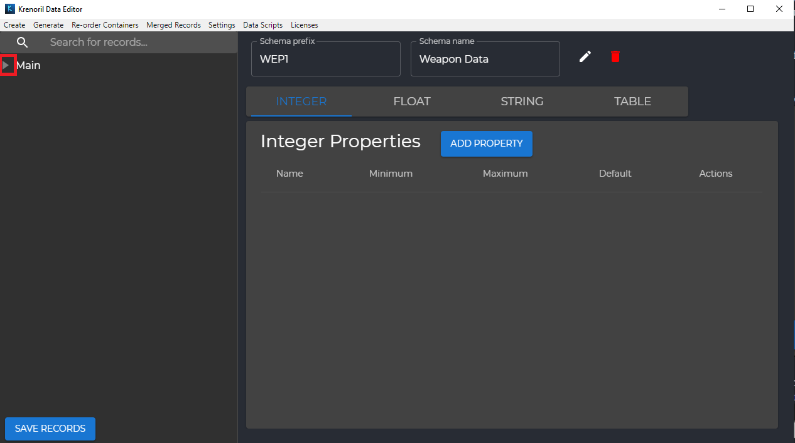
To view details about your schema, click the name of your schema there, which will open up the schema details on the right-hand side of the application. Here, you can add in properties to your schema, and each record using the schema must provide a value for those properties. There are four tabs, with each one corresponding to a different property type. In each tab, a table will illustrate all properties of that type for the schema. By default, the integer tab is selected. To create a new property (in this case, an integer property), click on the "Add Property" button.
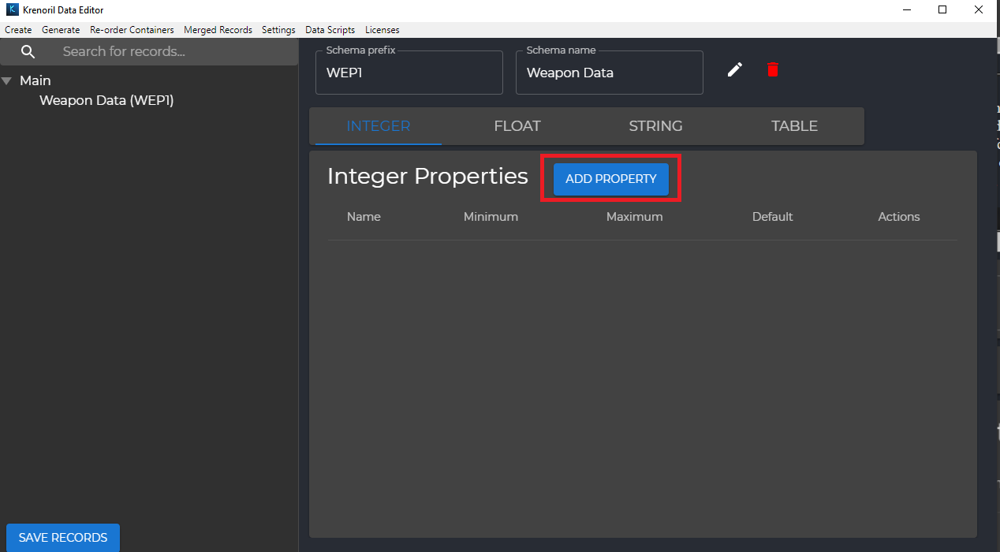
A modal that allows you to specify details about the new property will open. Here, you can assign a name to the property, minimum and maximum values that any record must adhere to, as well as a default value that will be automatically assigned to existing records, and to new ones. Optionally, you can also specify a description about the property which will be visible in the generated .html documentation file.
Click on the "Confirm" button to create the property.
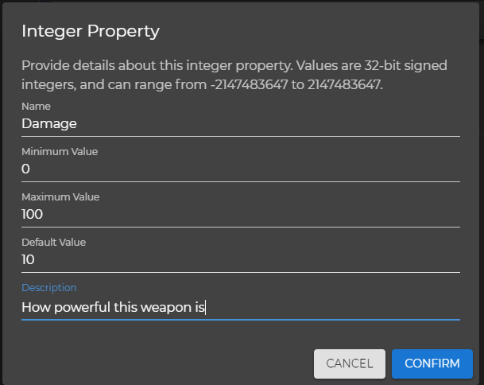
Now, the new property has been created and your schema has been automatically saved. You can see the new property in the table. If you want to modify some attribute of the property later on, you can do so by clicking on the pencil (edit) icon. If you want to delete the property, you can do so by clicking on the red garbage can (delete) icon.
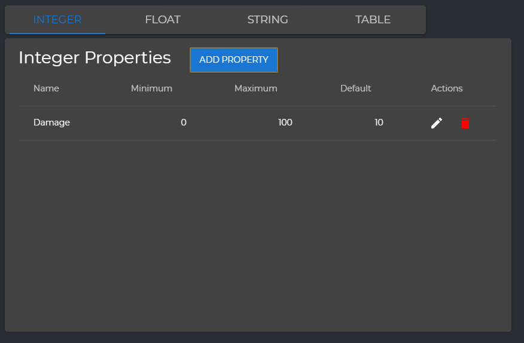
That was an example of creating an integer property. You can also create float, string, and table properties. Suppose that you wanted your new weapon schema to be linked to an item slot on your character, and you wanted item slots to be represented as schemas as well. This can be done by creating a new Item Slot schema. Do that using the same instructions used to create the Weapon schema, and then select the "Weapon Data" schema from the left side of the application. Now that we have an "Item Slot" schema, we can link the "Weapon Data" schema to it by creating a string property. Click on the "String" tab from the right-hand side of the application, and then click the "Add Property" button.

Enter a name for the property, and then click on the "Schema Reference" field. This will open a dropdown to be shown, where you can select any of the schemas that you have created. If you do not select a value from the dropdown, then you can not reference another schema. Select the "Item Slot" schema from the dropdown to reference that schema. Click the "Confirm" button to create the property.

Suppose that you also wanted each weapon to have a list of different rarities, that determine how rare the weapon is based on the player's level. This can be represented in a schema through the creation of a table property with one integer column (maximum player level), and one float column (percentage chance of finding the weapon). Click on the "Table" tab and click the "Add Property" button to begin creating the property.
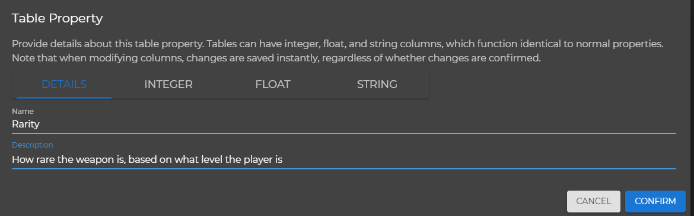
The player's level will likely be an integer value, so there needs to be an integer column added to the table property. Click on the "Integer" tab in the modal, and then click the "Add Property" button.

Specify details about the integer column, similar to how you would for a normal integer property. Click on the "Confirm" button to create the column.

We also need a float column for the percentage chance of finding the weapon, so click on the "Float" tab, and then click on the "Add Property" button.

Enter details about the float column, similar to how you would for a normal float property. Click on the "Confirm" button to create the column.
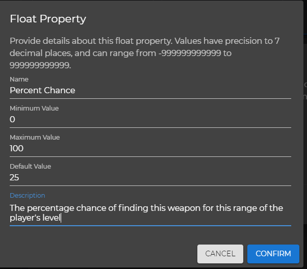
Now, we have both of the columns we need for this property. Click on the "Confirm" button to create the property.

We are done modifying our schema for now, so we can go ahead and begin creating records utilizing the "Weapon Data" schema.
In the modal that pops up, you can now enter basic details about your schema. There are two required fields (prefix, name), and one optional field (description).
The prefix of a schema is a 4 character identifier that is unique across all of your created schemas. This will be used to refer to this specific schema from other schemas. For legibility, you should make the prefix something similar to the name of the schema.
The name of the schema is meant for you and your players to easily understand what the schema is actually used for. It is recommended that you use a naming scheme similar to what you would call a class, but it is entirely up to you what conventions you want to use to name your schemas.
The description of the schema will be visible in the generated .html documentation of all of your schemas. This field can be left blank if you don't want to fill it in.
Click the "Confirm" button once you're done filling in the basic details about your schema to create it. For this tutorial, we'll create a schema for weapons for an RPG.
Now, your new schema has been created and saved. If you expand the "Main" container item on the left-hand side of the application, you will be able to see your new schema underneath the container.
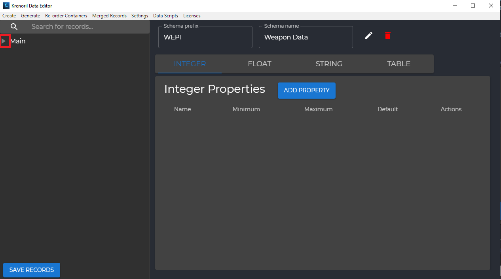
To view details about your schema, click the name of your schema there, which will open up the schema details on the right-hand side of the application. Here, you can add in properties to your schema, and each record using the schema must provide a value for those properties. There are four tabs, with each one corresponding to a different property type. In each tab, a table will illustrate all properties of that type for the schema. By default, the integer tab is selected. To create a new property (in this case, an integer property), click on the "Add Property" button.
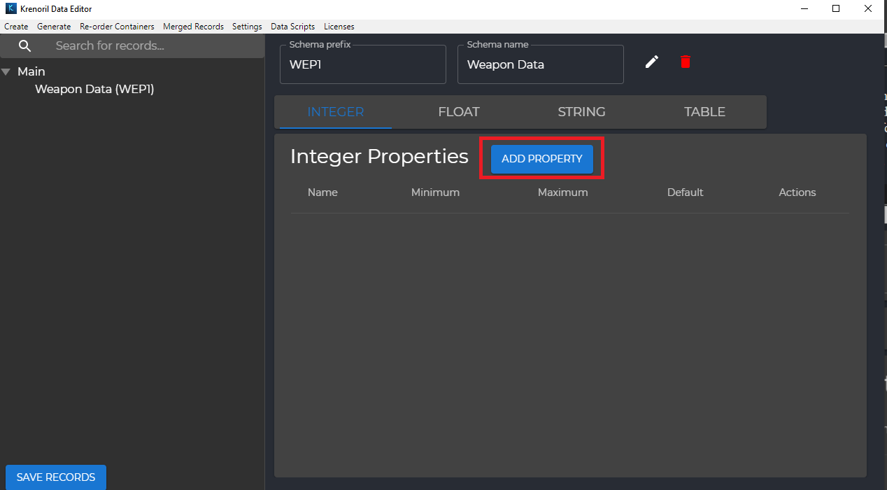
A modal that allows you to specify details about the new property will open. Here, you can assign a name to the property, minimum and maximum values that any record must adhere to, as well as a default value that will be automatically assigned to existing records, and to new ones. Optionally, you can also specify a description about the property which will be visible in the generated .html documentation file.
Click on the "Confirm" button to create the property.
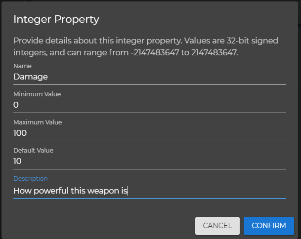
Now, the new property has been created and your schema has been automatically saved. You can see the new property in the table. If you want to modify some attribute of the property later on, you can do so by clicking on the pencil (edit) icon. If you want to delete the property, you can do so by clicking on the red garbage can (delete) icon.
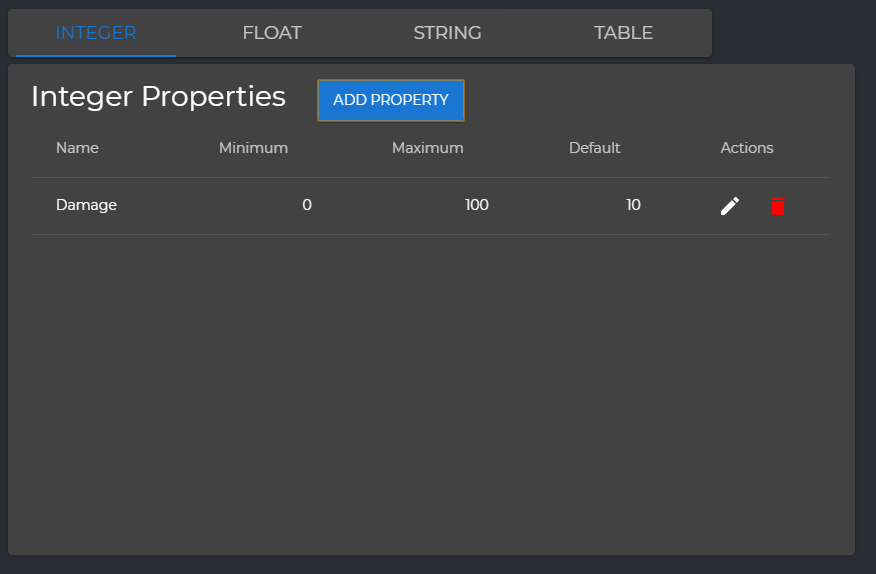
That was an example of creating an integer property. You can also create float, string, and table properties. Suppose that you wanted your new weapon schema to be linked to an item slot on your character, and you wanted item slots to be represented as schemas as well. This can be done by creating a new Item Slot schema. Do that using the same instructions used to create the Weapon schema, and then select the "Weapon Data" schema from the left side of the application. Now that we have an "Item Slot" schema, we can link the "Weapon Data" schema to it by creating a string property. Click on the "String" tab from the right-hand side of the application, and then click the "Add Property" button.
Enter a name for the property, and then click on the "Schema Reference" field. This will open a dropdown to be shown, where you can select any of the schemas that you have created. If you do not select a value from the dropdown, then you can not reference another schema. Select the "Item Slot" schema from the dropdown to reference that schema. Click the "Confirm" button to create the property.
Suppose that you also wanted each weapon to have a list of different rarities, that determine how rare the weapon is based on the player's level. This can be represented in a schema through the creation of a table property with one integer column (maximum player level), and one float column (percentage chance of finding the weapon). Click on the "Table" tab and click the "Add Property" button to begin creating the property.
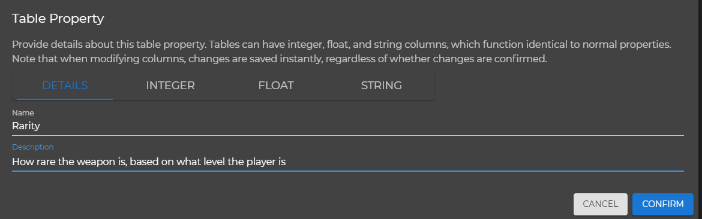
The player's level will likely be an integer value, so there needs to be an integer column added to the table property. Click on the "Integer" tab in the modal, and then click the "Add Property" button.
Specify details about the integer column, similar to how you would for a normal integer property. Click on the "Confirm" button to create the column.
We also need a float column for the percentage chance of finding the weapon, so click on the "Float" tab, and then click on the "Add Property" button.
Enter details about the float column, similar to how you would for a normal float property. Click on the "Confirm" button to create the column.
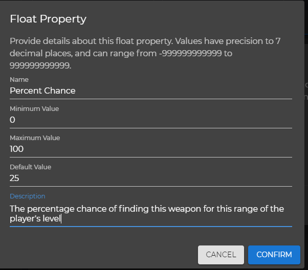
Now, we have both of the columns we need for this property. Click on the "Confirm" button to create the property.
We are done modifying our schema for now, so we can go ahead and begin creating records utilizing the "Weapon Data" schema.
Creating Records Tutorial
Now that we have schemas, we can begin creating records. Click on the "Create" option in the menu bar, and select the "Record" option from the dropdown.

A modal will pop up, and it requires us to specify some details about the record. The record MUST have a unique ID, that will be used to refer to the record from inside your game, and from inside the Krenoril application. The ID must consist of only alphanumeric characters. You must also specify a Container that the record will fall under (in this case, we'll use the Main container), as well as the schema that it uses. Remember that we need to keep track of Item Slots for Weapons, so for the first record, let's make it an Item Slot one. Enter details about the record, and click the "Confirm" button to create it.

Now, underneath the "Item Slot" schema item on the left-hand side of the application, you can see the "RightHandSlot" record. Clicking on the record there will show you details about it on the right-hand side of the application.

There weren't any properties associated with the "Item Slot" schema, so we don't need to do anything else for the "RightHandSlot" record. Instead, we're going to create a new "Weapon Data" record by following the same instructions as above.
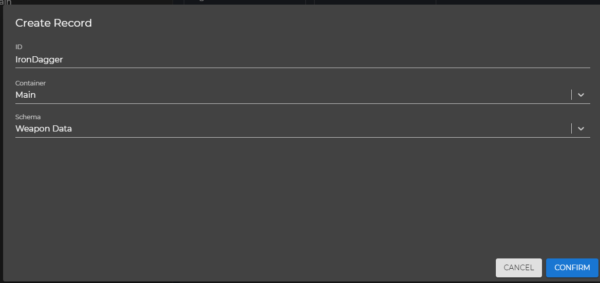
Now we also have an iron dagger item. In game, we want the name to show up as "Iron Dagger". To do this, we should not display the unique ID of the record in game to the user (note that you can do this if you really want to, but it makes changing the ID later a more painful process so it should be avoided).
Rather than creating a string property in the "Weapon Data" schema, Krenoril automatically provides a "Name" field that can be added to any record. Click on the pencil (edit) icon to open up details about the record's name.
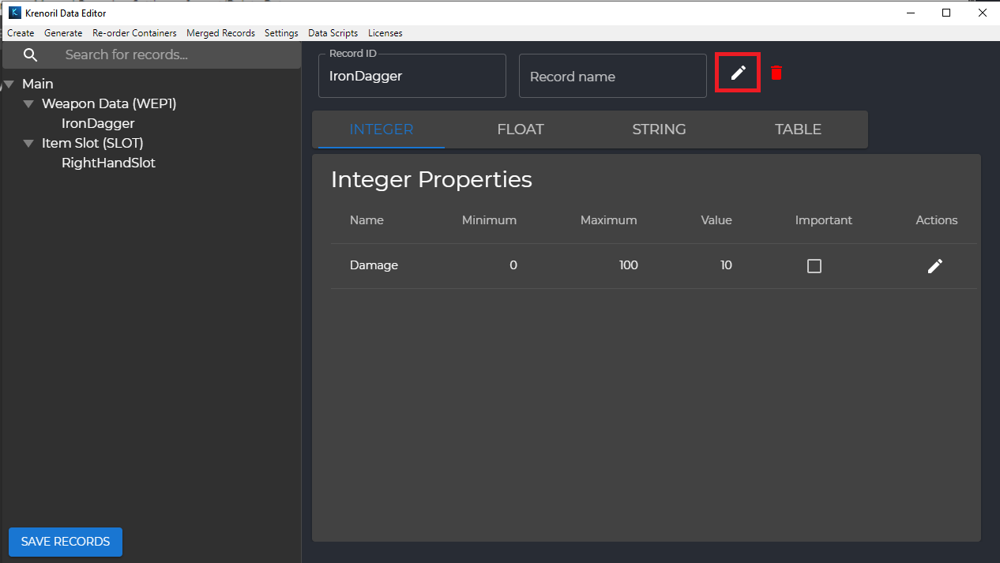
In the modal that is displayed, we can specify the name of the record with the "Name" text field. Click the "Confirm" button to save the new name of the record.
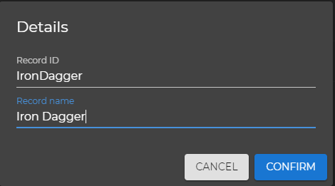
Now our "IronDagger" record has the name "Iron Dagger". Other containers that have a "Weapon Data" record with the "IronDagger" ID can override this name later on and change it to something else. If you recall, we assigned the default value for the "Damage" property of any record to be 10. Suppose that our "IronDagger" record is actually weaker than that, and we want to change its "Damage" value from 10 to 5. Click on the edit icon in the last column of the "Damage" property row in the Integer properties table.

Change the value from 10 to 5, and click the "Confirm" button.

We also wanted to link each weapon to an item slot. Click on the "String" tab to show the values of each string property for this record. In the "Slot" property row of the table, we can see that the default value is "NULL". This is the value that you must use when you don't want a record to specify a real value for a reference property. In our case, we want to link the Iron Dagger to the Right Hand item slot. Click the edit icon in the "Slot" property row in the String properties table.
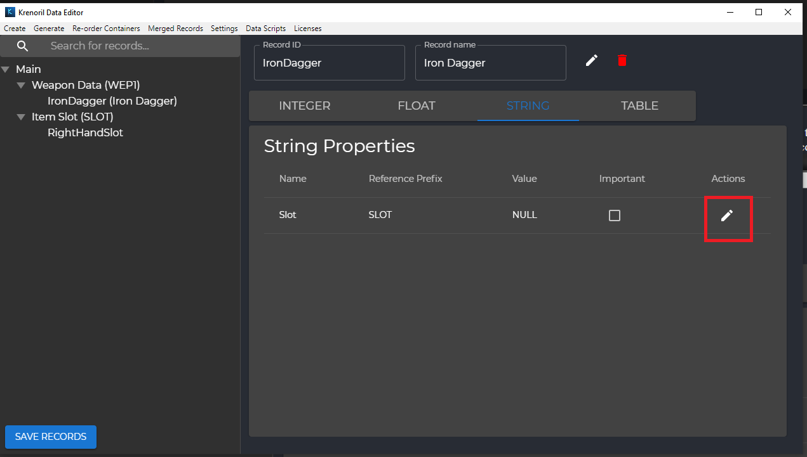
Click on the Value field in the modal that is displayed, and select the "RightHandSlot" entry. Click the "Confirm" to update the Slot property value.
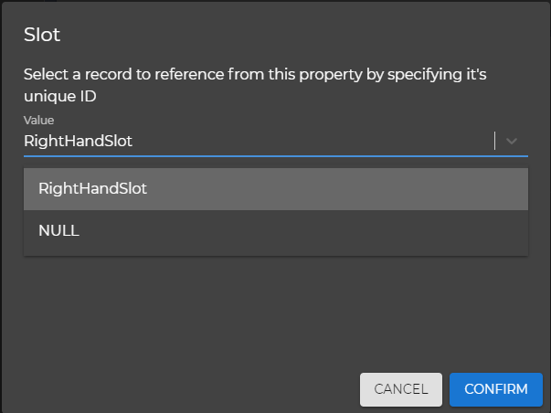
We also need to add in rarities for the Iron Dagger, based on the player's level. Click on the "Table" tab to show all table properties for the record. Click on the edit icon in the "Rarity" property's row in the table. Suppose that there is a 50% chance that the player can find the Iron Dagger if they are no more than level 5, 75% chance if they are more than level 5 but no more than level 10, and a 95% chance otherwise. There are many ways of handling this, depending on how we write our actual code ingame to check the Iron Dagger record's rarity property table. Lets assume that if there is a row with a column value that the player's level is less than, then the rarity in that row is used, and otherwise, the 95% chance is used. To do this, we need 2 rows in our table. Click the "Add Row" button twice.
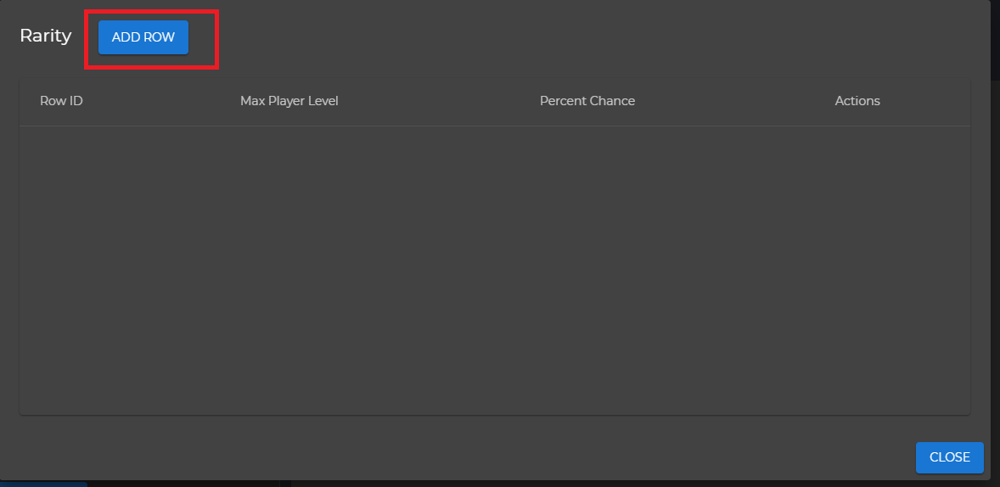
Now, we have 2 rows defined for our table. Lets modify each row to reflect our requirements by clicking on the edit icon near the end of each row.
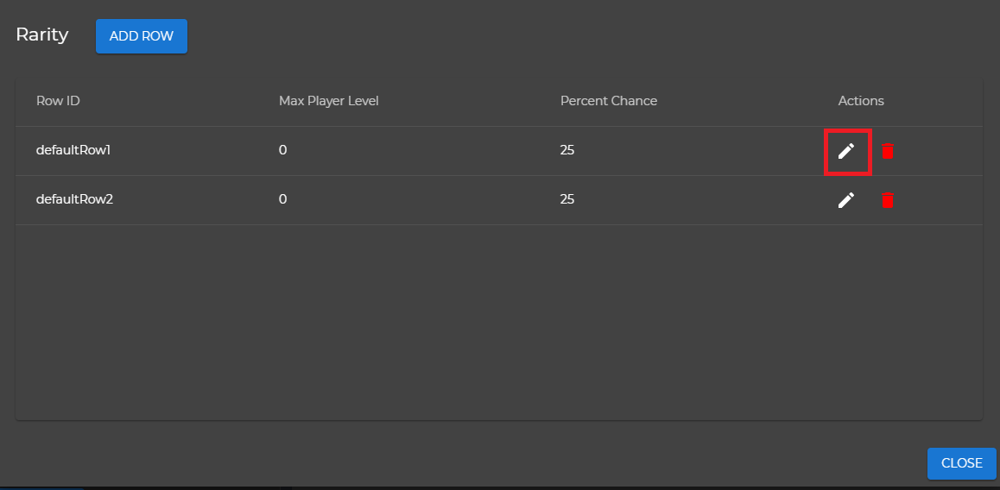
If the player is up to level 5, there should be a 50% chance of finding the iron dagger. This can be represented with the following values. Click the "Confirm" button.
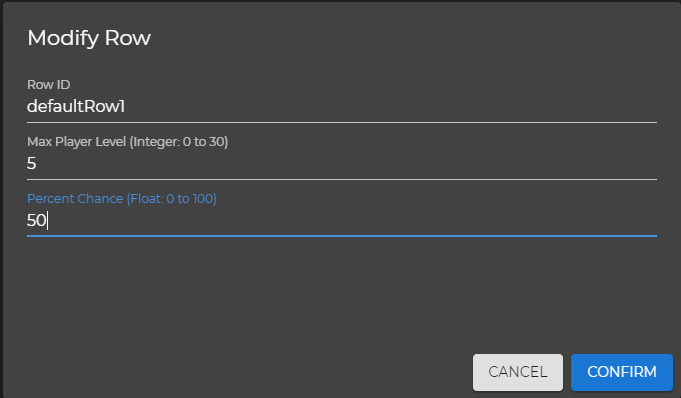
Edit the second row, and set the maximum level to 10, and the percent chance to 75%. This should be the final result.
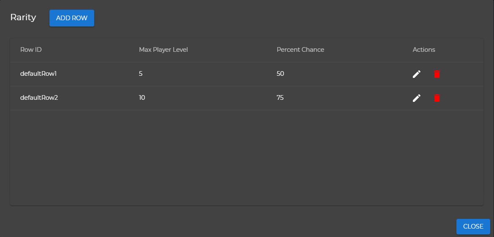
Click the "Close" button to finish modifying the table value.

We're finished specifying data for our Iron Dagger record! Now, if we wanted another weapon in our game, such as an Iron Sword, we could follow the same procedure to create another record, with different values, such as below.

Click the "Save records" button in the bottom left corner of the screen to save all your changes. This is important, and none of the changes made to your records will be saved if this is not clicked!
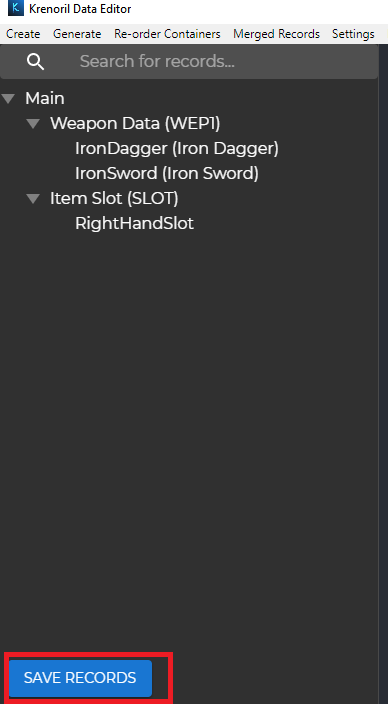
A modal will pop up, and it requires us to specify some details about the record. The record MUST have a unique ID, that will be used to refer to the record from inside your game, and from inside the Krenoril application. The ID must consist of only alphanumeric characters. You must also specify a Container that the record will fall under (in this case, we'll use the Main container), as well as the schema that it uses. Remember that we need to keep track of Item Slots for Weapons, so for the first record, let's make it an Item Slot one. Enter details about the record, and click the "Confirm" button to create it.
Now, underneath the "Item Slot" schema item on the left-hand side of the application, you can see the "RightHandSlot" record. Clicking on the record there will show you details about it on the right-hand side of the application.
There weren't any properties associated with the "Item Slot" schema, so we don't need to do anything else for the "RightHandSlot" record. Instead, we're going to create a new "Weapon Data" record by following the same instructions as above.
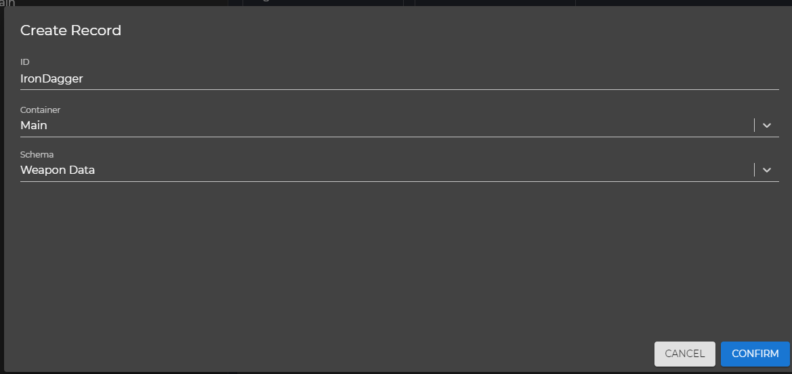
Now we also have an iron dagger item. In game, we want the name to show up as "Iron Dagger". To do this, we should not display the unique ID of the record in game to the user (note that you can do this if you really want to, but it makes changing the ID later a more painful process so it should be avoided).
Rather than creating a string property in the "Weapon Data" schema, Krenoril automatically provides a "Name" field that can be added to any record. Click on the pencil (edit) icon to open up details about the record's name.
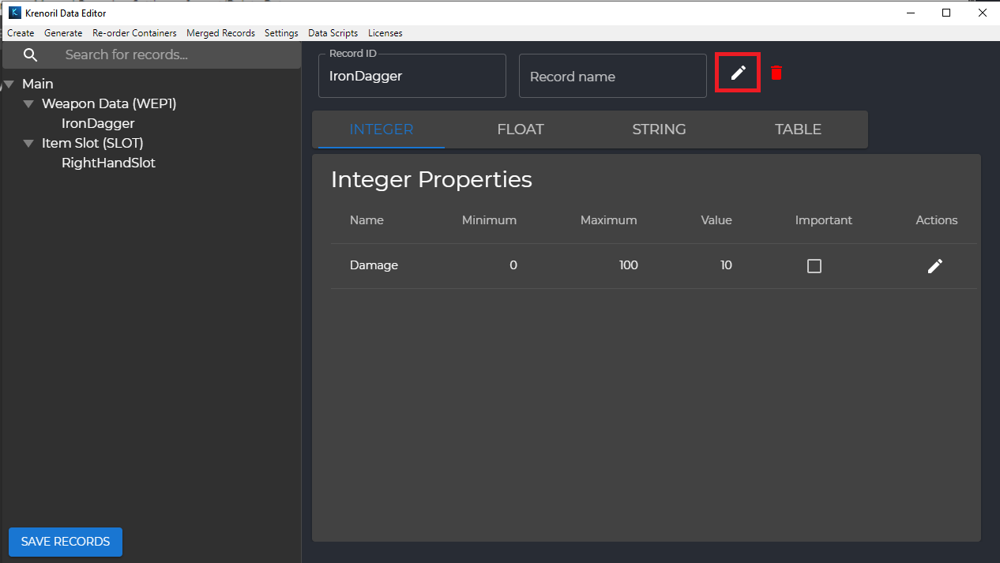
In the modal that is displayed, we can specify the name of the record with the "Name" text field. Click the "Confirm" button to save the new name of the record.
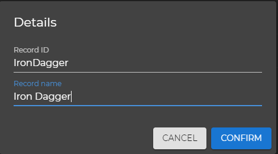
Now our "IronDagger" record has the name "Iron Dagger". Other containers that have a "Weapon Data" record with the "IronDagger" ID can override this name later on and change it to something else. If you recall, we assigned the default value for the "Damage" property of any record to be 10. Suppose that our "IronDagger" record is actually weaker than that, and we want to change its "Damage" value from 10 to 5. Click on the edit icon in the last column of the "Damage" property row in the Integer properties table.
Change the value from 10 to 5, and click the "Confirm" button.
We also wanted to link each weapon to an item slot. Click on the "String" tab to show the values of each string property for this record. In the "Slot" property row of the table, we can see that the default value is "NULL". This is the value that you must use when you don't want a record to specify a real value for a reference property. In our case, we want to link the Iron Dagger to the Right Hand item slot. Click the edit icon in the "Slot" property row in the String properties table.
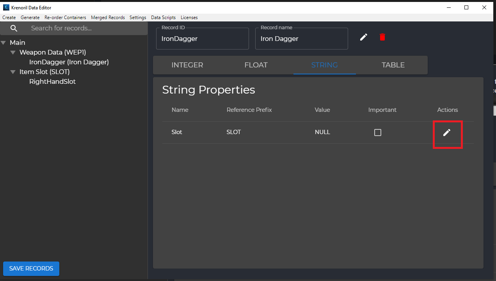
Click on the Value field in the modal that is displayed, and select the "RightHandSlot" entry. Click the "Confirm" to update the Slot property value.
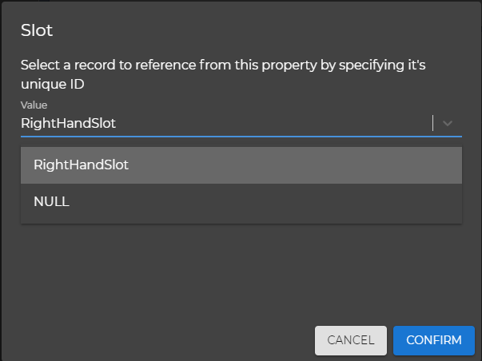
We also need to add in rarities for the Iron Dagger, based on the player's level. Click on the "Table" tab to show all table properties for the record. Click on the edit icon in the "Rarity" property's row in the table. Suppose that there is a 50% chance that the player can find the Iron Dagger if they are no more than level 5, 75% chance if they are more than level 5 but no more than level 10, and a 95% chance otherwise. There are many ways of handling this, depending on how we write our actual code ingame to check the Iron Dagger record's rarity property table. Lets assume that if there is a row with a column value that the player's level is less than, then the rarity in that row is used, and otherwise, the 95% chance is used. To do this, we need 2 rows in our table. Click the "Add Row" button twice.
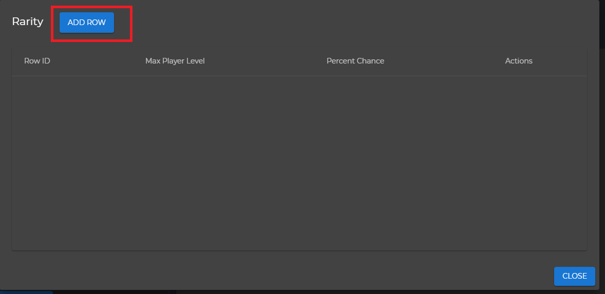
Now, we have 2 rows defined for our table. Lets modify each row to reflect our requirements by clicking on the edit icon near the end of each row.
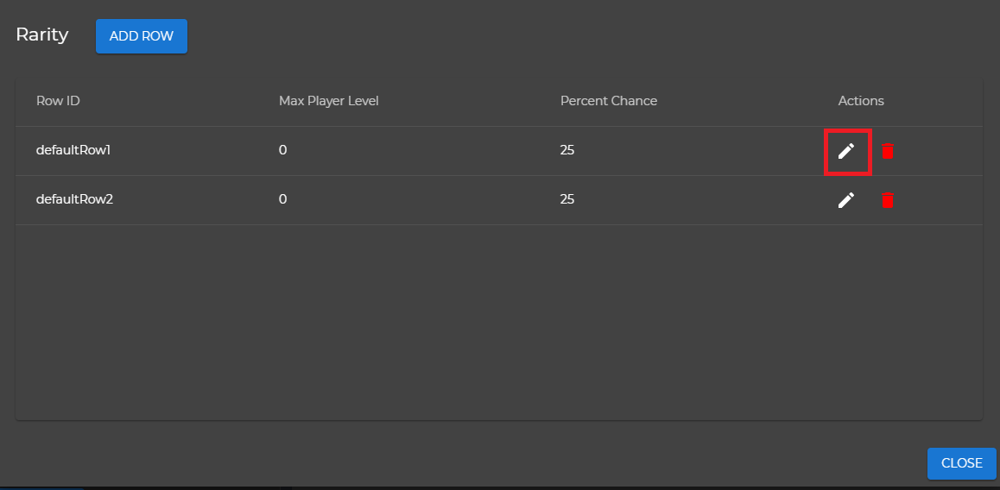
If the player is up to level 5, there should be a 50% chance of finding the iron dagger. This can be represented with the following values. Click the "Confirm" button.
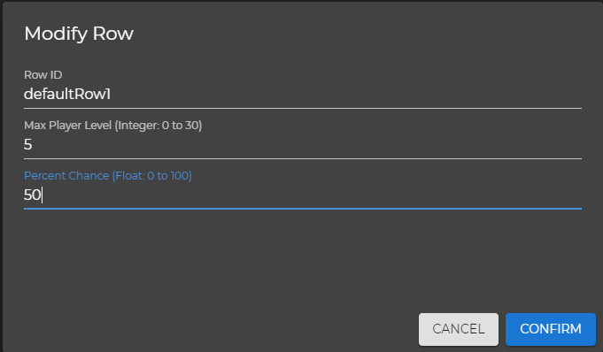
Edit the second row, and set the maximum level to 10, and the percent chance to 75%. This should be the final result.
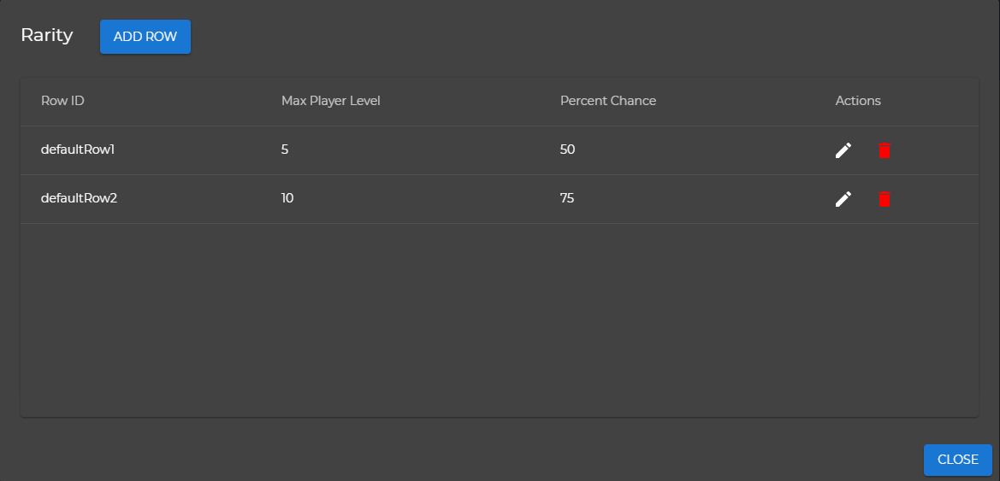
Click the "Close" button to finish modifying the table value.
We're finished specifying data for our Iron Dagger record! Now, if we wanted another weapon in our game, such as an Iron Sword, we could follow the same procedure to create another record, with different values, such as below.
Click the "Save records" button in the bottom left corner of the screen to save all your changes. This is important, and none of the changes made to your records will be saved if this is not clicked!
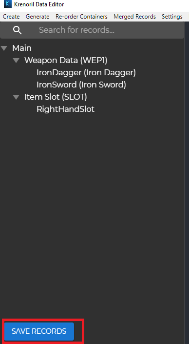
Accessing Data From C++ Tutorial
In any C++ file where you need to load Krenoril records, you must add the following include statement:
If you want to get a record by its unique ID, use:
If you want to get all records falling under a specific schema, use:
The API for records is explained in the "C++ Record API" panel below.
#include "KrenorilData.h"
Then, you can use any of the functions defined in the KrenorilData.h file.If you want to get a record by its unique ID, use:
FDataDefinition *record = KrenorilData::getRecordById(recordId)
If you want to get all records falling under a specific schema, use:
TArray<FDataDefinition*> recordsInSchema = KrenorilData::getRecordsForSchemaByPrefix(schemaPrefix);
where schemaPrefix is the unique 4-letter prefix of the schema you want to get the records of.
The API for records is explained in the "C++ Record API" panel below.
Accessing Data From Blueprint Tutorial
Get all records for a certain schema
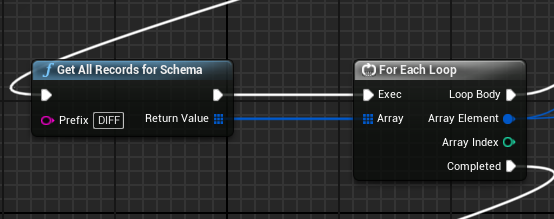
Get a specific record by its unique ID

Note that when you get a record by its ID, if you are not 100% sure whether the record will exist or not, then you should use the "Exists" output value to check if there was a result actually found. If you do this, you should only use the output record data if "Exists" was true.
getAllRecordsForSchema
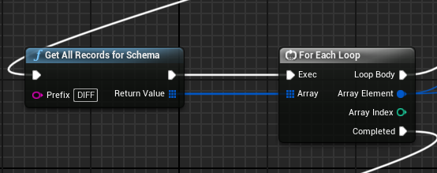
Get a specific record by its unique ID
getRecord
Note that when you get a record by its ID, if you are not 100% sure whether the record will exist or not, then you should use the "Exists" output value to check if there was a result actually found. If you do this, you should only use the output record data if "Exists" was true.
Working with Relational Data
When you're creating your schema schemas, it's very likely that you will end up using reference string properties, such as the item slot reference in the weapon data schema in the tutorial above.
In order to get the object being referred to with that sort of relational system, you will first have to get the value of the reference string property.
Then, you'll need to use
For the tutorial above, this is how you would get the item slot of a weapon in C++:
In blueprint, it is the same concept. Use the node to get the value of the weapon's "Slot" property, and then get the record that has that given ID.
Then, you'll need to use
KrenorilData::getRecordById(propertyValue)
in order to actually
get the record that is being referred to.For the tutorial above, this is how you would get the item slot of a weapon in C++:
FDataDefinition *weapon = KrenorilData::getRecordById("IronDagger");
FString equipSlotId = weapon->getStringPropertyValue("Slot");
FDataDefinition *slot = KrenorilData::getRecordById(equipSlotId);
FString equipSlotId = weapon->getStringPropertyValue("Slot");
FDataDefinition *slot = KrenorilData::getRecordById(equipSlotId);
In blueprint, it is the same concept. Use the node to get the value of the weapon's "Slot" property, and then get the record that has that given ID.
C++ Record API
A record's value for individual properties can be retrieved by calling one of: getIntPropertyValue, getFloatPropertyValue, getStringPropertyValue, getTablePropertyValue
For integer, string, and float properties, the return value of the function will be an int32, float, or FString value (respectively).
For a table property, the return value will be a FUETableProperty object. The API for that is as follows:
For integer, string, and float properties, the return value of the function will be an int32, float, or FString value (respectively).
For a table property, the return value will be a FUETableProperty object. The API for that is as follows:
// Gets the value of an integer cell in the table
// @param columnName - name of the column containing the cell
// @param rowIndex - index of the row containing the cell (starts at 0)
// @throws invalid_argument if there is no column with the matching type and name
// @throws out_of_range if row is out of bounds
getIntValue(columnName, rowIndex)
// Gets the value of a float cell in the table
// @param columnName - name of the column containing the cell
// @param rowIndex - index of the row containing the cell (starts at 0)
// @throws invalid_argument if there is no column with the matching type and name
// @throws out_of_range if row is out of bounds
getFloatValue(columnName, rowIndex)
// Gets the value of a string cell in the table
// @param columnName - name of the column containing the cell
// @param rowIndex - index of the row containing the cell (starts at 0)
// @throws invalid_argument if there is no column with the matching type and name
// @throws out_of_range if row is out of bounds
getStringValue(columnName, rowIndex)
// @return the number of rows in this table
getRowsCount()
Example to get the value in a table with a String column called "Description" in the second row:
// @param columnName - name of the column containing the cell
// @param rowIndex - index of the row containing the cell (starts at 0)
// @throws invalid_argument if there is no column with the matching type and name
// @throws out_of_range if row is out of bounds
getIntValue(columnName, rowIndex)
// Gets the value of a float cell in the table
// @param columnName - name of the column containing the cell
// @param rowIndex - index of the row containing the cell (starts at 0)
// @throws invalid_argument if there is no column with the matching type and name
// @throws out_of_range if row is out of bounds
getFloatValue(columnName, rowIndex)
// Gets the value of a string cell in the table
// @param columnName - name of the column containing the cell
// @param rowIndex - index of the row containing the cell (starts at 0)
// @throws invalid_argument if there is no column with the matching type and name
// @throws out_of_range if row is out of bounds
getStringValue(columnName, rowIndex)
// @return the number of rows in this table
getRowsCount()
table.getStringValue("Description", 1)
All records will also have a getUniqueId() method that returns the unique ID of the record, and a getName() method that returns the (non-unique) name of the
record.
Blueprint Record API
Records and their property values will also be accessible in Blueprint.
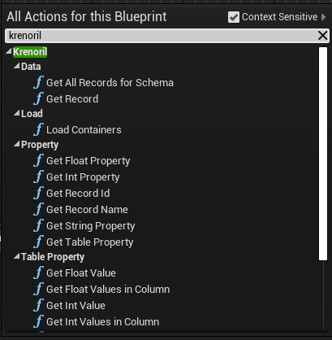
Integer, float, and string properties will give you their value directly. Tables require you to specify the name of a column that you want to fetch data from, as well as the index (starting at 0) of the row you want to fetch data from. This is done by using either getIntValue, getFloatValue, or getStringValue. If you want to iterate through each row in the table, you can use getRowsCount() in a for loop, and pass in the index to the getIntValue/getFloatValue/getStringValue function.
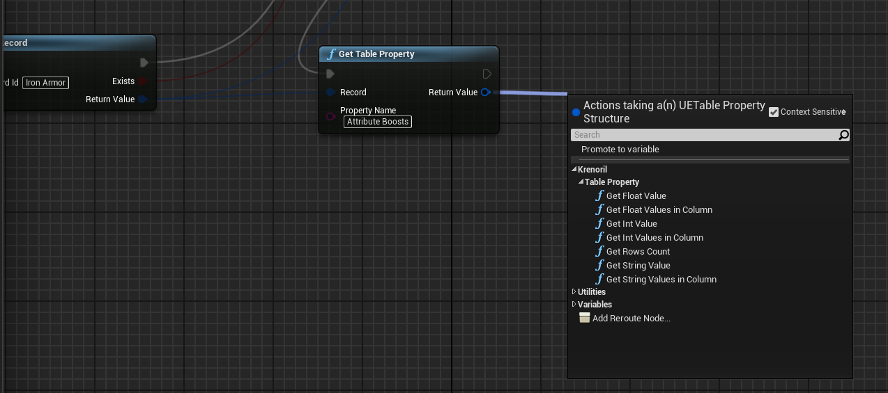
Example to iterate through each row in a table, and get the values in the "Attribute" String column and the "Value" Integer column for each row.

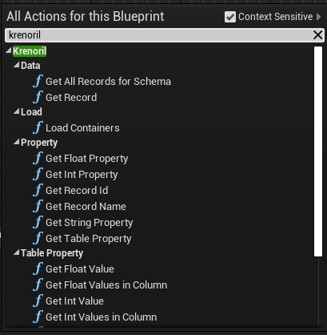
Integer, float, and string properties will give you their value directly. Tables require you to specify the name of a column that you want to fetch data from, as well as the index (starting at 0) of the row you want to fetch data from. This is done by using either getIntValue, getFloatValue, or getStringValue. If you want to iterate through each row in the table, you can use getRowsCount() in a for loop, and pass in the index to the getIntValue/getFloatValue/getStringValue function.
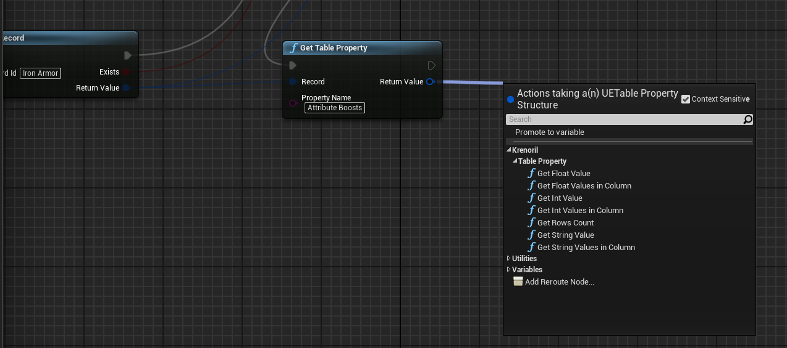
Example to iterate through each row in a table, and get the values in the "Attribute" String column and the "Value" Integer column for each row.
Generating Schema Documentation
You can generate documentation for all of your project's Krenoril schemas as a standalone .html file that players can view
to get a good idea of the overall schema of your schemas. This can be done by selecting the "Generate" option in the top bar, and clicking
the "Documentation" option from the dropdown. Afterwards, there will be a "documentation.html" file in the data/ folder in the directory that the Krenoril Data Editor was run from.
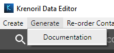
This is an example documentation file generated from the Schema tutorial mentioned earlier.
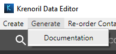
This is an example documentation file generated from the Schema tutorial mentioned earlier.
Enabling Hot Reload
By default, Krenoril will automatically load containers the first time you call a Blueprint or C++ function that requires containers to be loaded.
A side effect of this is that when you are developing your game, changes made to container files will not be automatically updated, and you will have to
manually restart the UE4 editor.
However, you can manually call the LoadContainers Blueprint function, or the KrenorilData::loadContainers() C++ function when your game first loads to resolve this issue and enable hot reloading without requiring editor restarts.
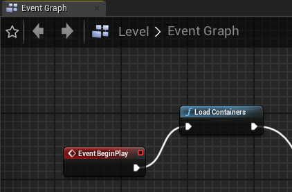
However, you can manually call the LoadContainers Blueprint function, or the KrenorilData::loadContainers() C++ function when your game first loads to resolve this issue and enable hot reloading without requiring editor restarts.
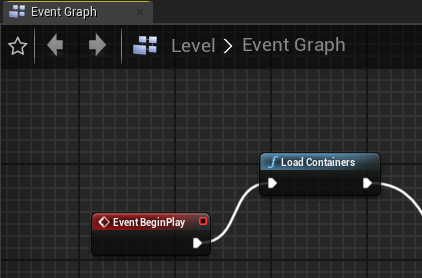
Shipping Your Game
When you ship your game, there will be another step that you will have to do in order for the final build to run successfully.
When you generate your shipped game package, there will be a "Content" folder for your game. Navigate to it, and copy the "KrenorilData" folder in your
project's content folder into the shipping Content folder.
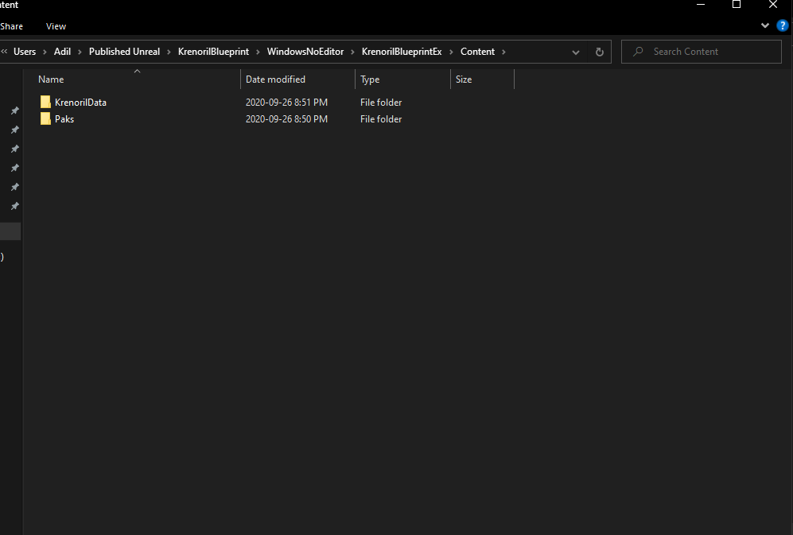
Distributing Krenoril to Players
When you distribute Krenoril to your players, you need to distribute the entire Krenoril application folder (including the data folder in that directory), but you shouldn't share the admin.bat file. Admin mode is meant to be run only by developers, and is of no
real use to players. You MUST distribute the licenses folder as well, and the EULA.md file. You MUST also delete the status.txt file in the Krenoril application folder, so that users are required to accept the EULA before they can use the application.
Alternatively, you can just link your players to the Krenoril Data System github repository, and have them download Krenoril from there instead. Remember that regardless of which method you use for distribution, you need to also distribute the file in the `data/` folder in the application directory called `schemas.json`.
It is highly recommended that you generate the documentation.html file mentioned in the "Generating Schema Documentation" panel above. You should also share the user instructions .html file.
Alternatively, you can just link your players to the Krenoril Data System github repository, and have them download Krenoril from there instead. Remember that regardless of which method you use for distribution, you need to also distribute the file in the `data/` folder in the application directory called `schemas.json`.
It is highly recommended that you generate the documentation.html file mentioned in the "Generating Schema Documentation" panel above. You should also share the user instructions .html file.